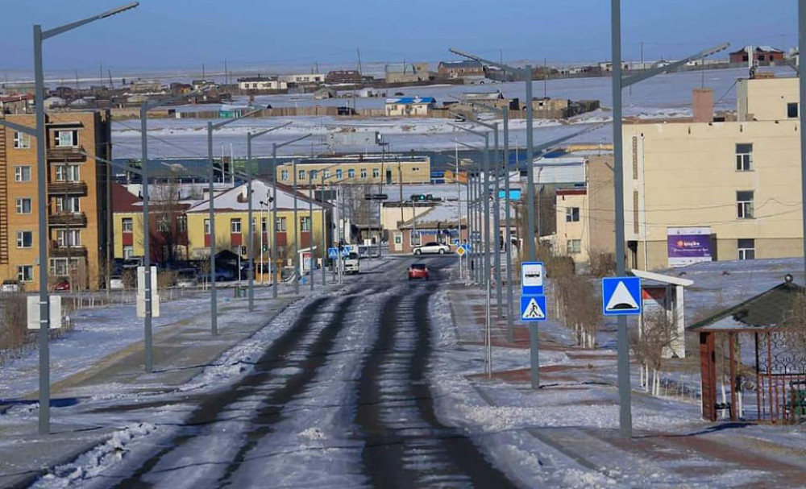

Dornogovi (Mongolian: Дорноговь, East Gobi) is one of the 21 aimags (provinces) of Mongolia. It is located in the southeast of the country, bordering PR China's autonomous region of Inner Mongolia. Dornogovi is located in the Gobi desert and frequent sand- and snow storms amplify the hard weather conditions of Mongolia. Temperatures can range from −40 °C (−40 °F) to 40 °C (104 °F) with ground temperatures as high as 60 °C or 140 °F.
